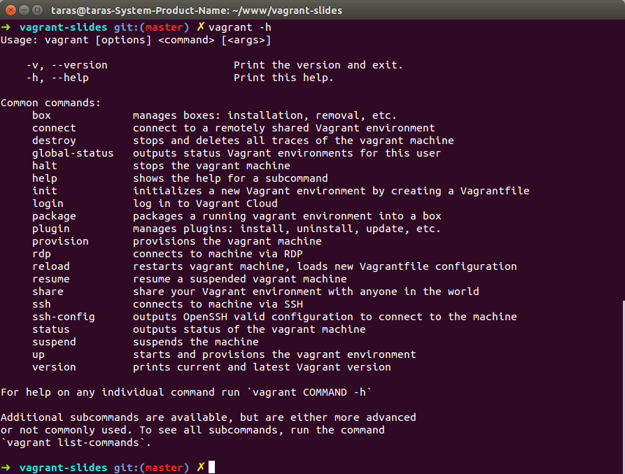
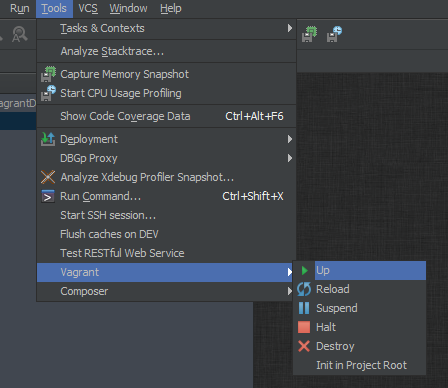
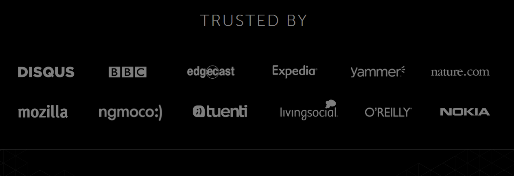

git clone ....
runІдеальне налаштування середовища розробки
Реальність
git clone ....
README
php.ini
rabbitmq
...vagrant -h

Vagrantfile
Vagrant.require_version ">= 1.3.5"VAGRANTFILE_API_VERSION = "2"
Vagrant.configure(VAGRANTFILE_API_VERSION) do |config|
config.vm.provision "shell", inline: "echo Hello"
config.vm.define "web" do |web|
web.vm.box = "apache"
end
endMULTI-MACHINE
Vagrant.configure("2") do |config|
config.vm.provision "shell", inline: "echo Hello"
config.vm.define "web" do |web|
web.vm.box = "apache"
end
config.vm.define "db" do |db|
db.vm.box = "mysql"
end
endВ основному корисно для моделювання взаємодії а також тестування
Provisioning
- Ansible
- Chef
- Docker
- Puppet
- Salt
puphpet.com
Графічний інструмент для генерації конфігурації
Vagrant Digital & Ocean, Amazon ...
vagrant plugin install vagrant-digitalocean
vagrant up --provider=digital_oceanvagrant plugin install vagrant-aws
vagrant up --provider=awsconfig.vm.provider :digital_ocean do |provider, override|
override.ssh.private_key_path = '~/.ssh/id_rsa'
override.vm.box = 'digital_ocean'
override.vm.box_url = "https://github.com/..."
provider.client_id = 'YOUR CLIENT ID'
provider.api_key = 'YOUR API KEY'
endОптимізація
* nfs
* Use all CPU cores and 1/4 system memory
* винести за межі проекту кеш, логи, тощо
config.vm.network :private_network, ip: '192.168.50.50'
config.vm.synced_folder '.', '/vagrant', nfs: true* Use all CPU cores and 1/4 system memory
config.vm.provider "virtualbox" do |v|
cpus = 2
mem = 1024
end* винести за межі проекту кеш, логи, тощо
Vagrant & PhpStorm

